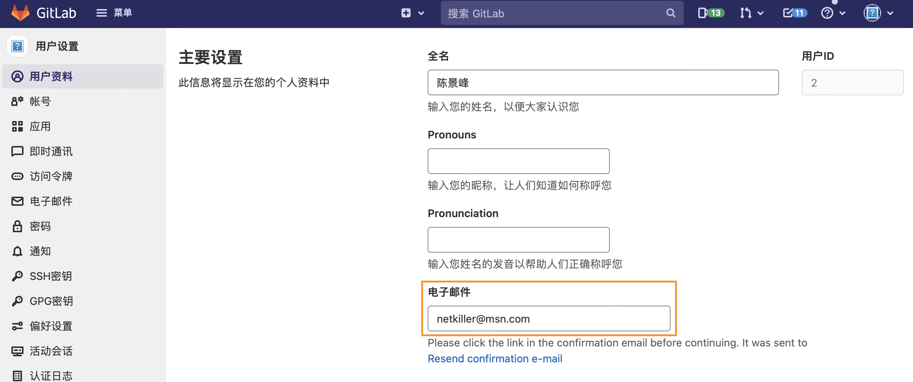

| 知乎专栏 ｜ 多维度架构 |
Neo-iMac:workspace neo$ gpg --quick-generate-key netkiller@msn.com
About to create a key for:
"netkiller@msn.com"
Continue? (Y/n) y
We need to generate a lot of random bytes. It is a good idea to perform
some other action (type on the keyboard, move the mouse, utilize the
disks) during the prime generation; this gives the random number
generator a better chance to gain enough entropy.
We need to generate a lot of random bytes. It is a good idea to perform
some other action (type on the keyboard, move the mouse, utilize the
disks) during the prime generation; this gives the random number
generator a better chance to gain enough entropy.
gpg: key 2F05850CF88E8B3A marked as ultimately trusted
gpg: directory '/Users/neo/.gnupg/openpgp-revocs.d' created
gpg: revocation certificate stored as '/Users/neo/.gnupg/openpgp-revocs.d/085C991D914F0EBD60FFE33B2F05850CF88E8B3A.rev'
public and secret key created and signed.
pub ed25519 2021-11-04 [SC] [expires: 2023-11-04]
085C991D914F0EBD60FFE33B2F05850CF88E8B3A
uid netkiller@msn.com
sub cv25519 2021-11-04 [E]
查看证书
Neo-iMac:workspace neo$ gpg -k
/Users/neo/.gnupg/pubring.kbx
-----------------------------
pub rsa2048 2021-10-08 [SC] [expires: 2023-10-08]
70CECE32E5D67D12B95ED1E7F01C0CAEAAA458E6
uid [ unknown] Neo Chen <netkiller@msn.com>
sub rsa2048 2021-10-08 [E] [expires: 2023-10-08]
如果你已有证书，使用下面命令导出公钥和私钥证书
Neo-iMac:workspace neo$ gpg --import public.key gpg: /Users/neo/.gnupg/trustdb.gpg: trustdb created gpg: key F01C0CAEAAA458E6: public key "Neo Chen <netkiller@msn.com>" imported gpg: Total number processed: 1 gpg: imported: 1
测试签名
Neo-iMac:workspace neo$ echo "test" | gpg --clearsign -----BEGIN PGP SIGNED MESSAGE----- Hash: SHA256 test -----BEGIN PGP SIGNATURE----- iQEzBAEBCAAdFiEEcM7OMuXWfRK5XtHn8BwMrqqkWOYFAmGDsLMACgkQ8BwMrqqk WOYhcAf8C6XfBwEaVA1HVUdcqMVdq404hnRzeGOTu8XifTF+MMT0nA/GPbHQY76i 17pskWtjrj6y1aZ39/GiEnuXUqgfqvrWAWJymAMLi/v0xFJIJseCWoZ952zi5w6/ uWsM5GIMz0uBuu7/DfN8+XXaeyyvzhYvIMsKsbNEnDOLXORsUFWBNsyhZWaQa699 EbPLMBMP2xIdXr1/D+T6qfIf7iCgRPaPKizcZcymaCE1wFBOGQjgAzgFgQ8HCkCV K1vtIMCBL9BJbCV5YolwB0Yrvaoi4EnforaM8L+7GBvBuEOsa3YNmUgcD6oLyWZX LwSk4dGHC1Efk2Cy+e+XYGO3GQIBMw== =7wHY -----END PGP SIGNATURE-----
导出公钥证书
Neo-iMac:workspace neo$ gpg --armor --export netkiller@msn.com -----BEGIN PGP PUBLIC KEY BLOCK----- mQENBGFgEfYBCACXIT6K61G3uwwFPxwKaKirZyhSnhh22CwTPEGkeviyXCCfpr2X d8bjibOCwO8bigXFjaKuTikHmpppy7B/CKJ4OlsLXnoMnnSmynntudJ+jcGmC3/0 QE1nvDzqbe8L5KJ3TMgAuDUSp3QWXqIAXxQfEABLl49wJ11envwTXJVPG/ks2U3m b/QAFZqd3AxUpEzASIKbtiB5JE/rxnhyZH7fHkt3vU2N3qAcUQ67cJN+thkMEsOo wnp9eGvDv1qBieQKK5DzxC+a04p4cWv5z0rV4IEE3bRR2wKW45HI9Lmgz8zZyFcO gTV1HshRYnDBVgzcnyombQfzbd76g5tBQC2vABEBAAG0HE5lbyBDaGVuIDxuZXRr aWxsZXJAbXNuLmNvbT6JAVQEEwEIAD4WIQRwzs4y5dZ9Erle0efwHAyuqqRY5gUC YWAR9gIbAwUJA8JnAAULCQgHAgYVCgkICwIEFgIDAQIeAQIXgAAKCRDwHAyuqqRY 5v8UB/9GuKFO86BprJUfPBOE4sqUPH44kLupVMuvM+XaBkuOQIT5q37MPoUpb3Uj g7tV3Nc+6/VLTCDTERKEfV7PRke2UjjjdYf4EYA2PMVVtHEnWngKhVcMkD2iEvR2 ViCQQ6sCve5lefMQcPyLVMX1ynMOQCNiVcOZjfv+vW2H4BynZC6kG472a3TjoTKz TlbrsiK/n7CSMLsevQh9UrG2n24rKfxQiWCo9tVxyWjcYLEO6yRzOxC+KnEBVr30 O86qn8A/soKY3PEWWUWCcve9g7Km3OVMQf3kJo+xy3hDafDhuBTvNUH3Bz9lwXa3 Sune2h5J77AbgUCHZSw4MZEWdknxuQENBGFgEfYBCACVjr3QGs1b2cei5sHyBO59 hC8VgehGs42jiItaNQSLpBO8g8Z2UbwcB9y3QWrbBITXfj1Jmy+XJInbc3FYYoZE 9bVHb+KjIR4JLqWrieGCWaKzl78ByRRKfQWO0di5OVMQBWg3yzd2dRJnvpa8+W60 ksHoyL0wcXLDbCxYxTNmpHacbvEJYe4zxYJxMyD3V8BEF/r6HtA8ZrhPHrI23AF6 iqSK7PIKAFBLIbU9jinncy/Vbv1DgXZrh72cxhl0n7hTgX8tI2gFRpz+p10iKX2B zab3F4Ac1YNBy/F9tqIeCPBGK4CmFTtZkzpokevrIfzLThWuqRGIRtnwqlvMKHxz ABEBAAGJATwEGAEIACYWIQRwzs4y5dZ9Erle0efwHAyuqqRY5gUCYWAR9gIbDAUJ A8JnAAAKCRDwHAyuqqRY5hpyB/4hh3qMpSOtjOFS5nWGrYNb/o//YRKDwORjJUdI t0A1RvQkIZEQ9MYR67xpQ8OO2JrsznB7yF0D/Wrmleuu9lY9IVgdaNdNYRRzAdam MuU5hYe6cUkNudjekhWb2J77EIaL70g9tboEHlQEdVe/FesLg1iZVlPZaaN6UjN6 81AcVw3nloBgIHQUWWsdsSW5sTfymnMhtUfJVlPfeEagLIioTvTzUqy0LjjeIOhR B1EXkjs/4g/20c/X9JH8z+QwnZ0lmHy9HzUl+g3zLQ7Vu2xaTwHgBWl5sGdkDkJX RiSdzxKOlGfxNN0e5r7fUYvlCkqOvAFvdpZANcVYkWurjWt2 =W+8i -----END PGP PUBLIC KEY BLOCK-----
确保邮箱与GPG密钥邮箱相同，否则会提示“未验证”
|  |
将公钥复制到输入框，然后点击“添加密钥”按钮
 |
查看密钥用户ID
Neo-iMac:workspace neo$ gpg --list-secret-keys --keyid-format=long
/Users/neo/.gnupg/pubring.kbx
-----------------------------
sec rsa2048/F01C0CAEAAA458E6 2021-10-08 [SC] [expires: 2023-10-08]
70CECE32E5D67D12B95ED1E7F01C0CAEAAA458E6
uid [ultimate] Neo Chen <netkiller@msn.com>
ssb rsa2048/EAA2F7FD813D2A2E 2021-10-08 [E] [expires: 2023-10-08]
注意：可以使用 F01C0CAEAAA458E6 也可以使用电子邮箱
全局配置适用与所有仓库
Neo-iMac:workspace neo$ git config --global user.signingkey netkiller@msn.com Neo-iMac:workspace neo$ git config --global commit.gpgsign true Neo-iMac:workspace neo$ echo 'export GPG_TTY=$(tty)' >> /.bash_profile Neo-iMac:workspace neo$ export GPG_TTY=$(tty) Neo-iMac:workspace neo$ git commit -S -m "your commit message"
本地仓库配置，可以单独配置每个仓库的证书。
Neo-iMac:workspace neo$ git config --local user.email netkiller@msn.com Neo-iMac:workspace neo$ git config --local user.signingkey netkiller@msn.com Neo-iMac:workspace neo$ git config --local commit.gpgsign true Neo-iMac:workspace neo$ echo 'export GPG_TTY=$(tty)' >> /.bash_profile Neo-iMac:workspace neo$ git config --list --local | grep user user.email=netkiller@msn.com user.signingkey=netkiller@msn.com